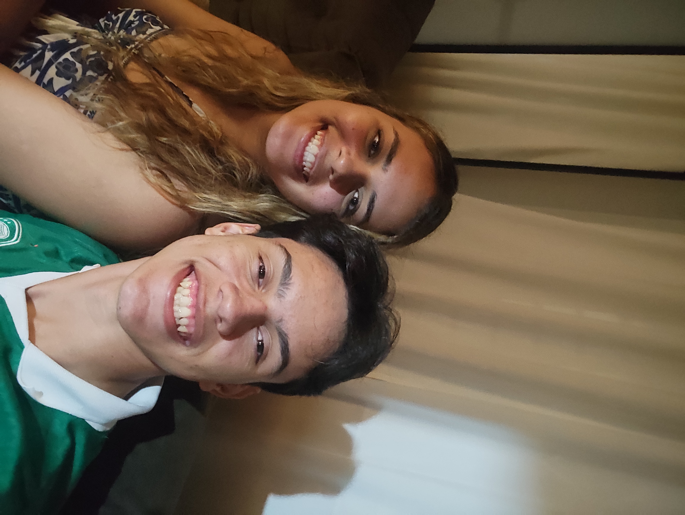
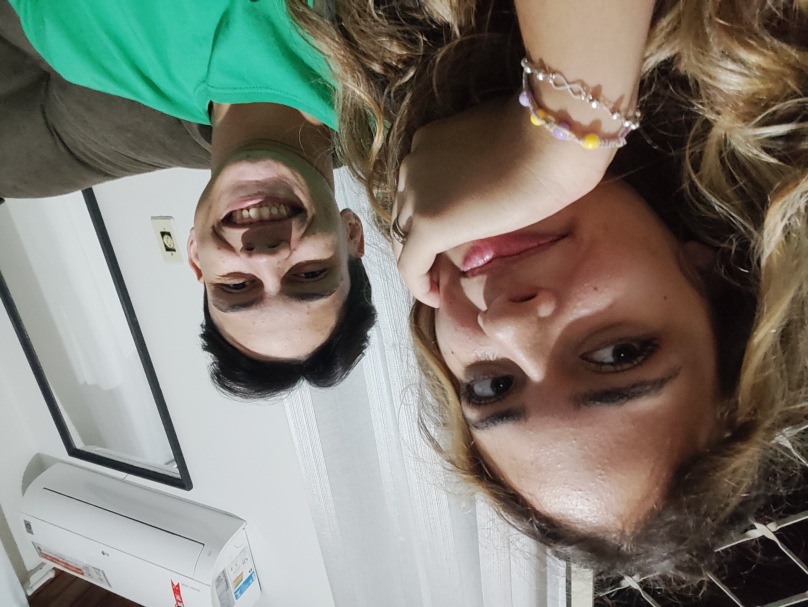
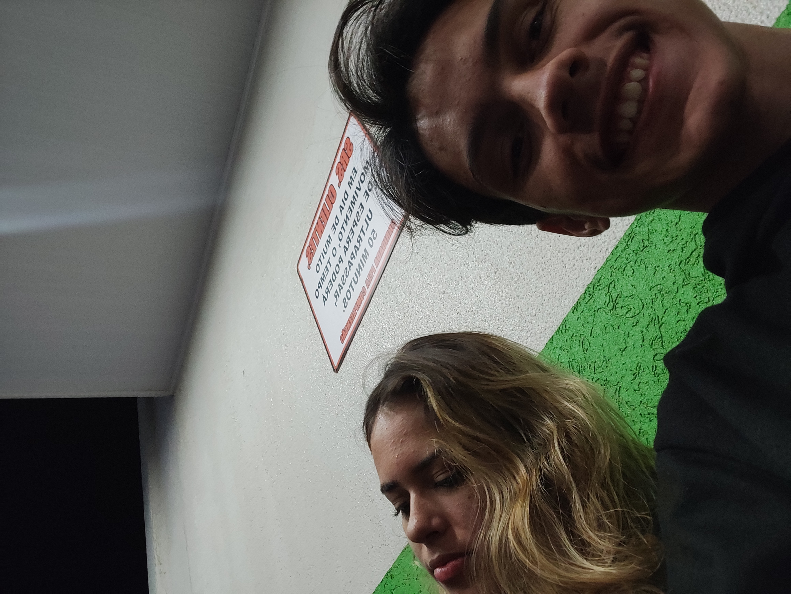
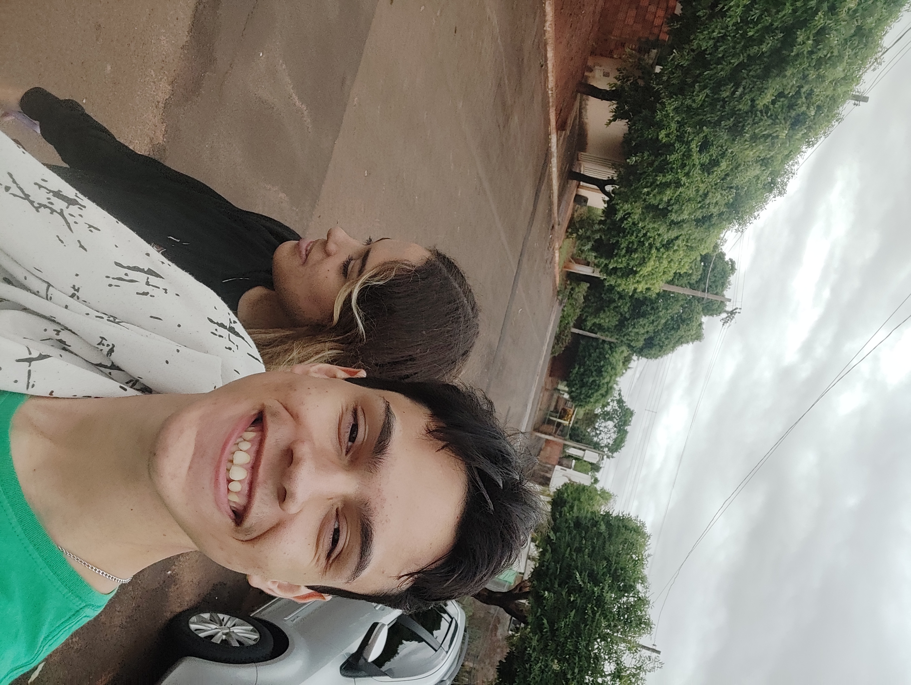
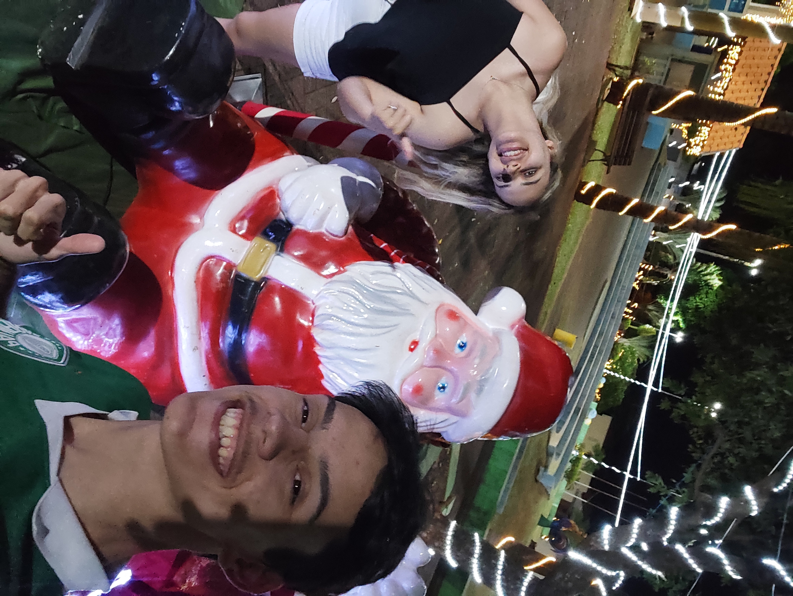
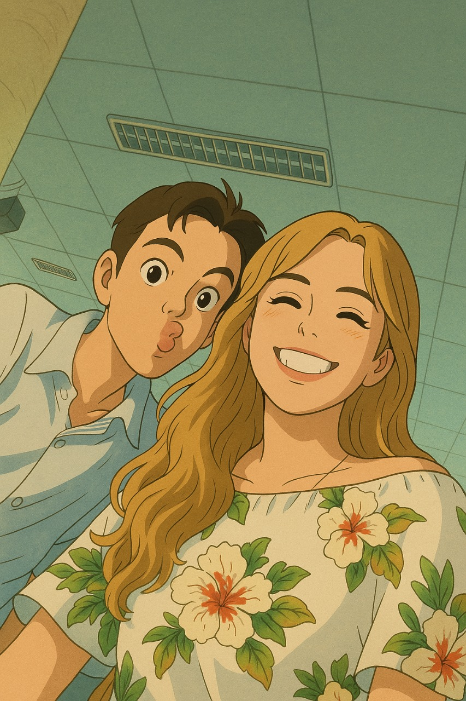
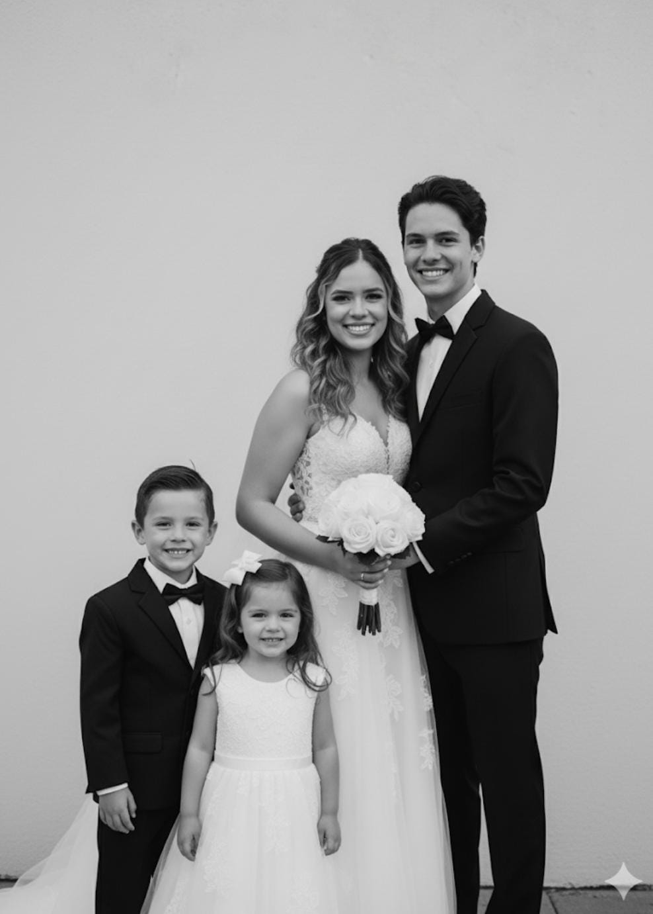

ABR - MAI
O começo de tudo e o instante em que meu coração te escolheu.
Nossas memórias
Doze meses de amor, lembranças e momentos que moram em mim.
Cada card representa um mês da nossa história. Você pode trocar as imagens pelos registros favoritos de cada fase.

MAI - JUN
Aprendi que caminhar ao seu lado deixa tudo mais bonito.

JUN - JUL
Seu sorriso virou uma das minhas lembranças favoritas.

JUL - AGO
Cada detalhe com você começou a ter mais significado.

AGO - SET
Entre risos e abraços, fomos construindo nosso lugar.
SET - OUT
Seu carinho me mostrou como o amor pode ser leve e intenso.

OUT - NOV
Com você, os dias simples passaram a ser inesquecíveis.

NOV - DEZ
Nosso amor ficou ainda mais forte em cada nova memória.
DEZ - JAN
Você continuou sendo a melhor parte de cada plano meu.

JAN - FEV
Até o tempo parece mais bonito quando é vivido com você.

FEV - MAR
Quase um ciclo completo de uma história que eu quero para sempre.
MAR - ABR
Em breve
Mais um capítulo lindo da nossa história está chegando.
00
dias
00
horas
00
min
00
seg
Mês 12
Esperando com o coração acelerado pelo nosso próximo 18/04.
Seu amor me acalma.
Seu abraço me encontra.
Seu sorriso ilumina meus dias.
Nós dois somos meu lugar favorito.
Nosso Futuro
Um espaço só para tudo o que fomos criando e imaginando com IA.
Sonhos, ideias, cenários e pequenas visões do amanhã que ganharam forma com criatividade, carinho e a nossa essência.


Criado com amor e imaginação
Nosso amanhã também já começou a ganhar forma.
Aqui ficam guardadas as criações que nasceram das nossas ideias, da nossa curiosidade e desse jeitinho bonito de sonhar o futuro juntos.
Para terminar
Se eu pudesse escolher de novo, em cada vida, em cada acaso, ainda escolheria você.
Obrigado por cada memória, por cada cuidado e por cada instante que faz o amor parecer tão real, tão doce e tão nosso.
Voltar ao começo